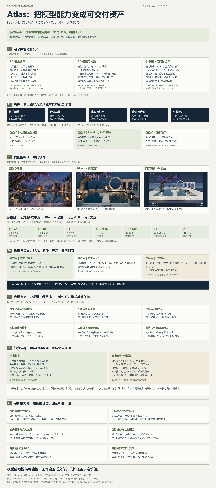

ATLAS / THE COMPLETE PICTURE · 2026.10.16
从模型能力，
到三维资产的价值。
一张图整理我们的理解：库能做什么、如何实现、实际做到了什么，以及它的意义、边界与下一步。图中嵌入原创参考图、Blender 实际渲染和网页真实 3D 截图。


高清 PNG · 4,000 × 9,001 像素 · 约 6.43 MB。点击下图打开原尺寸，可使用浏览器缩放。

继续查看论据与实际场景
图中概括的判断、数据定义、来源和未确认事项，均可在完整研究中展开阅读。